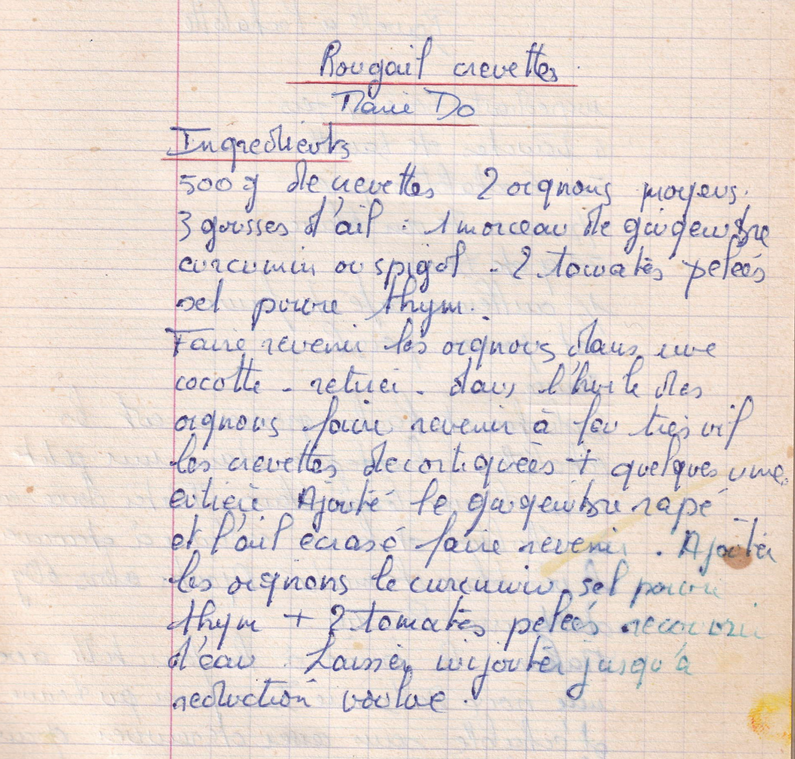

Rougail crevettes
Marie Do

LISTE DES INGREDIENTS
- 500gr de crevettes
- 2 oignons moyens
- 3 gousses d'ail
- 1 morceau de gingembre
- Curcumin ou spigol
- 2 tomates pelées
- Sel, poivre, thym
PREPARATION
- Faire revenir mes oignons dans une cocotte
- Retirer
- Dans l'huile des oignons, faire revenir à feu très vif les crevettes décortiquées + quelques une entières
- Ajouter le gingembre rapé et l'ail écrasé
- Faire revenir
- Ajouter les oignons, le curcumin, sel poivre thym + 2 tomates pelées
- Recouvrir d'eau
- Laisser mijoter jusqu'à réduction voulue